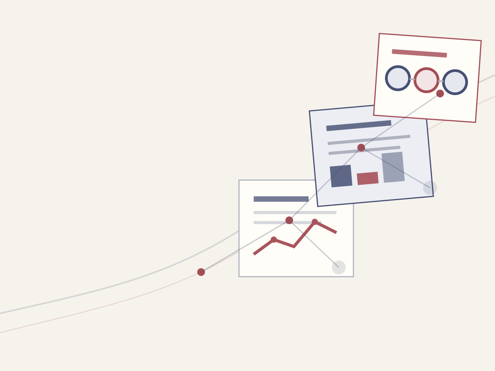

任务表现可能提高
AI 可以帮助一些人在部分任务中更快生成、整理或分析材料

看到“AI 提效”或“岗位增长”时，先查研究测了谁、什么任务和多长时间
 VER. 2608.1
Built with impress.js
VER. 2608.1
Built with impress.js
一项写作任务变快、公司继续招聘、新人岗位减少，测的不是同一件事
AI 可以帮助一些人在部分任务中更快生成、整理或分析材料
职业需求还受到市场扩张、成本变化和新任务出现等因素影响
总体增长不会保证每个年龄、经验和岗位层级获得相同机会
先圈出报告研究的是一次任务、一个岗位、一家公司还是整个劳动力市场
先看研究测的是一次活动、一个岗位、一家公司，还是整个劳动力市场
一次写作、分析、编程或沟通活动是否变快、变好
一组任务、协作关系和责任是否重新组合
团队流程、成本、质量和业务结果是否发生变化
就业数量、工资、招聘和机会分布是否改变
指标决定报告看见什么，也决定它遗漏什么
| 研究对象 | 常见指标 | 能回答的问题 |
|---|---|---|
| 一次任务 | 时间、质量、错误 | 使用 AI 后这项任务是否改善 |
| 一类员工 | 使用率、感受、工资 | 哪些人采用并获得什么变化 |
| 一家组织 | 成本、营收、交付 | 局部改善是否转化为组织结果 |
| 劳动力市场 | 就业、招聘、岗位发布 | 机会总量和分布是否变化 |
不能用一次短期任务实验直接预测整个就业市场
工具获准、接入资料、改变检查流程并改善工单后，公司做法才变
员工在自己的任务中尝试生成、整理或分析
企业规定工具、可读取的客户资料和回复权限
AI 起草、员工核对政策、异常转主管，步骤和交接随之改变
不能只看采用率；还要连续几个月检查客服步骤、等待、返工和投诉，并确认没有增加信息泄露
政策材料过期、人工核对排队或员工无权发送，都会吃掉起草节省的时间
缺少最新退款政策或客户订单，回复再流畅也可能答错
若所有初稿都排队等主管检查，节省的起草时间会在这里耗尽
员工没有发送权限时仍要交接；答错政策后也要有人更正并联系客户
同一个平均提升可能由完全不同的群体变化组成
| 要分开比较什么 | 可能不同的群体 | 继续查什么 |
|---|---|---|
| 职位层级 | 管理层与一线员工 | 谁真正获得工具、数据和决策权 |
| 工作经验 | 新人与资深人员 | 谁能识别错误并利用领域知识 |
| 企业条件 | 数字基础强与弱的企业 | 谁具备流程、数据和系统接入条件 |
| 任务性质 | 可验证与难验证任务 | 谁能判断输出已经达到标准 |
平均数说明整体方向，分布差异决定影响落在谁身上
完成结果和形成判断依赖不同的学习过程
AI 可以加速资料整理、初稿、常规代码和基础分析
衡量重点通常是速度、格式和一次任务的输出质量
新人要经历客户追问、代码报错、主管反馈和返工，才知道为什么这样判断
衡量重点是能否解释原因、识别风险并处理新情境
减少机械操作有价值，但不能让生成结果替代真实反馈
短期实验、员工问卷、招聘广告和企业案例各自只回答一部分问题
| 证据类型 | 较适合支持 | 不能单独推出 |
|---|---|---|
| 短期任务实验 | 特定任务中的速度与质量变化 | 长期职业和组织结果 |
| 员工自报调查 | 使用感受、态度和采用情况 | 实际生产率和因果关系 |
| 职位发布数据 | 招聘需求和技能表述变化 | 已实现就业和岗位内部任务 |
| 企业应用案例 | 一种具体采用方式和条件 | 其他企业能够复制同样收益 |
先写研究对象、时间长度和实际指标，再判断结论能否谈到岗位或长期职业
要证明等号右边，必须增加组织结果、长期变化或不同群体的数据
下次看到“AI 改变工作”的结论，先问：研究了谁、做什么任务、持续多久、实际测了什么？